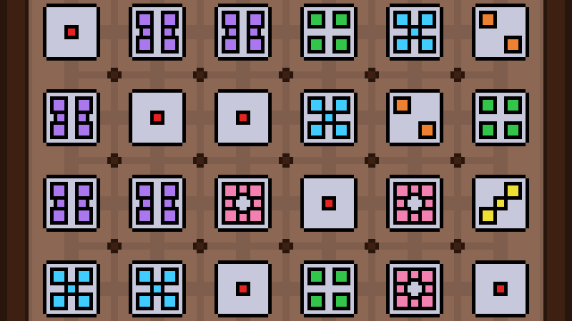

About Me
I'm a programmer and game designer from Ohio with an education in computer science and math. I originally learned how to program while making my first game in 2008, and have been working to continue that ever since. I dabbled in map building in Minecraft and Halo: Reach, but really found a home with Super Mario Maker in 2018.
I'm currently looking for work in the game development field. contact me at places for stuff
I'm currently looking for work in the game development field. contact me at places for stuff
Personal Projects
matchris
(2022)

A tile-matching puzzle game, with a unique system of patterns to match tiles in. This is a complete game built with the Godot Engine and includes sound, menus, saves, settings, and accessibility.
Play Here
-
What I did:
- All game design and programming
- All UX, art, and menu designs
- All music and sfx
Beyond a Shadow of a Crouch
(2021)

A top-down stealth game prototype built using GameMaker Studio 2 over a 4-day weekend. The focus was on giving enemies basic self-preservation by having them call for backup before going to check a suspicious noise.
Demonstration Video
-
What I did:
- All programming and art
- Built a library to make animation programming function how I expect it to
Level Design: Super Mario Maker
Sometimes Super Mario Maker level-makers like to play tricks on the player to add a bit of life to a difficult puzzle or platforming challenge.
These tricks are referred to in the SMM community as "trolls", and levels that are built entirely out of these tricks, repeatedly anticipating and subverting the player's expectations, are known as "troll levels".
Making a good troll level requires finesse to ensure that the trolls are effective, the deception is entertaining, and the player has enough information to continue through the level once they have been "trolled". These elements make the playtesting/revision loop crucial and reward a strong understanding of the player's thought process.
I've been a part of the community surrounding these levels since mid-2018, and they make up the majority of the levels showcased here.
Making a good troll level requires finesse to ensure that the trolls are effective, the deception is entertaining, and the player has enough information to continue through the level once they have been "trolled". These elements make the playtesting/revision loop crucial and reward a strong understanding of the player's thought process.
I've been a part of the community surrounding these levels since mid-2018, and they make up the majority of the levels showcased here.
What Are You Doing in My Thwomp?
(2021)

My only solo SMM2 troll level. The best fun of the level is in parts that focus on giving the player plenty of information while still knowing they'll do the wrong thing.
SMM2 Level Code: B5N-KNY-M2G
Playthroughs & Creator's Commentary
The CarlMoney Collab 3D
(2020)

A huge, 17-maker collab troll level. Much of the fun of this level comes from how often it reuses its own setups and tricks to form comedic callbacks.
Playthroughs & Creator's Commentary
-
What I did:
- Headed the project along with three other makers
- Built the level out of the 17 makers' individual sections
- Handled the entire playtesting/revision process
There and Back and There Again
(2020)

A challenge level where the player covers the same territory three times with different powerups. The main point of interest is pseudo-checkpoints that supply a certain type of powerup, but only once you already have that type of powerup.
SMM2 Level Code: 8DY-DGV-F5G
Demonstration Video
thank mr skeltrol
(2019)

A solo troll level, often using very common low-brow hazards in fresh ways to make them new again. The highlight point hinges on giving the player just enough time to panic and overthink themselves into the wrong solution.
SMM1 Level Code: 8BC6-0000-03EB-0D38
Playthrough Video (38:44-54:17)
The Pinnacarl of Larl Design.
(2019)
My first good troll level. The highlight is the final room, which pulls off a perfect misdirect into despair before giving a surprise victory.
SMM1 Level Code: 1920-0000-0415-0793
Playthrough Videos